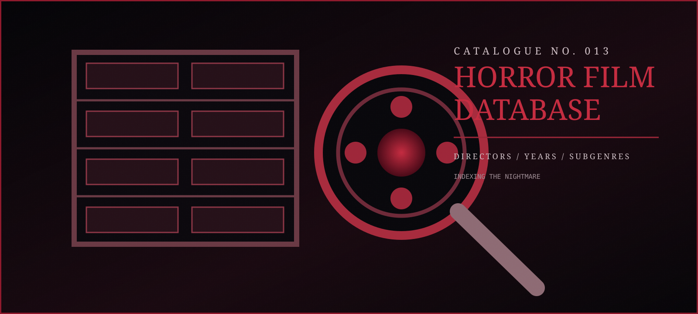

FILE 013 / THE CINEMA INDEX
HORROR FILM DATABASE
A growing bilingual index of horror cinema: directors, years, subgenres and concise editorial notes.

A growing bilingual index of horror cinema: directors, years, subgenres and concise editorial notes.
